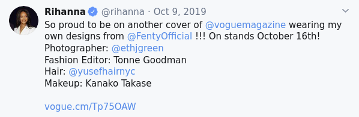

Last updated: 2025-02-21
This assignment is due March 8th at 11:59 PM. Submit your solution on BrightSpace, under the “Unit 5” assignment.
Please copy your code into the text box, making sure to indent it properly with whitespace so that it appears the same as in IDLE or wherever you wrote the code. This will make it easier for me to grade.
You can submit multiple times. I will only grade your last submission.
This assignment uses the tweets contained in all_tweets.zip, which contains multiple files with tweets in them from various accounts on Twitter (now “X”). You can click on the filename to download the file. If it opens in your browser, can you use the shortcut Ctrl + S (or Cmd + S on macOS) to save the file to your computer.
You will need to decompress the zip archive and then copy the files in that folder into the folder with your script in it, so that the .tweets files are accessible from your script.
You have been given a collection of text files, each with 1000 tweets posted by various Twitter accounts. Each line in a file is a single tweet, so we can read each of the tweets like this:
with open('nytimes.tweets') as lines:
for line in lines:
print(line)If you are getting a decoding error, use this method to open the file using the UTF-8 encoding:
with open('nytimes.tweets', encoding='utf8) as lines:
for line in lines:
print(line)A username prefixed with @ is called a mention. For example, the tweet below contains 4 mentions (@voguemagazine, @FentyOfficial, @ethjgreen, and @yusefhairnyc):

The above tweet is represented by the following string in the text file rihanna.tweets, in which any mention can be identified by a word that begins with @:
So proud to be on another cover of @voguemagazine wearing my own designs from @FentyOfficial !!! On stands October 16th! Photographer: @ethjgreen Fashion Editor: Tonne Goodman Hair: @yusefhairnyc Makeup: Kanako Takase https//vogue.cm/Tp75OAW pic.twitter.com/LU9TEe1NEhWrite a program to find the most frequently mentioned usernames in each of the provided files. To correctly identify mentions, we need to clean up each tweet, keeping only letters, digits, and the symbols @ and _. After each tweet is cleaned up, we have to go through its words, and if the word starts with @, it is a mention.
cleanedup function that we wrote in lecture so that it keeps not only letters, but also digits (i.e., the characters 0123456789) and the symbols @ and _.findMentions that takes a filename as a parameter and reports the 3 usernames most frequently mentioned in that file. The function should create a dictionary of counts for all username mentions (words starting with @). After reading through the file and accumulating the counts for all mentioned usernames, use the dictionary to create a list like this: [[15: '@alice'], [20, '@bob'], [7, '@carol'], ... Use sort (or sorted) to sort the above list and print out the 3 most frequently mentioned usernames.os.listdir('.'): if the file name ends with .tweets, call findMentions on the file to find its most frequent mentions.If you copy all the provided .tweets files into the folder with your script in it, running your script should give the following or something similar:
nytimes.tweets
@caityweaver 3
@nytmag 5
@nytparenting 5
justinbieber.tweets
@applemusic 15
@theellenshow 15
@skrillex 20
aoc.tweets
@rashidatlaib 5
@ayannapressley 6
@ilhanmn 9
espn.tweets
@nba 21
@thecheckdown 29
@kingjames 32
rihanna.tweets
@rihanna 21
@savagexfenty 29
@fentybeauty 48
amyschumer.tweets
@bridgeteverett 14
@rachelfeinstein 15
@comedycentral 49
ladygaga.tweets
@ahsfx 10
@btwfoundation 11
@applemusic 13
BillGates.tweets
@theeconomist 11
@warrenbuffett 15
@melindagates 18
BarackObama.tweets
@ofa 5
@vp 5
@michelleobama 9
ID_AA_Carmack.tweets
@boztank 3
@joerogan 3
@elonmusk 5
Kaepernick7.tweets
@mikailsprice 26
@darthkaepernick 28
@kaepernick7 138
doctorow.tweets
@cbc 3
@doctorow 3
@sensanders 7You should be able to do all of the tasks with only the Python topics we covered in class so far.
If you want to use more complex functionality than what we discussed in class, the Python documentation may be helpful: Python 3.10 documentation